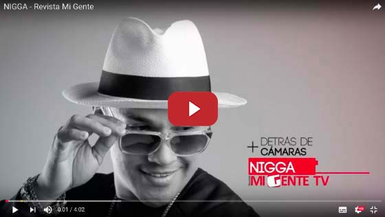

Flex Nigga
El “Romantic Style” que está pisando fuerte en ColombiaDespués de sus éxitos –Te quiero– y –Te amo tanto-, regresa Nigga a seguir conquistando los corazones de los colombianos.
Félix Gómez, más conocido como Flex Nigga, está presentando exclusivamente para Colombia su nuevo sencillo –Dame tus besos-, un trabajo lleno de romance y ternura; habla de una relación noble y joven, en donde atraviesa por una etapa muy difícil, pues ese amor es prohibido.“Quería hacer una canción tipo dedicable pero movidona, pues tiene esa ternura, esa especial manera de enamorarse cuando uno es joven”.
{kind=link}
Este tema nació por un concepto muy “Romantic Style”, como es Nigga, quien quería hacer un trabajo al estilo de –Te amo tanto– y –Te quiero-, canciones que marcaron la historia de la música urbana en Colombia.
Nigga, quien fue el ganador de Tu cara me suena Panamá en 2013, aprovechó todo el entrenamiento y la experiencia para profesionalizar más sus canciones y videos, en especial en la última producción discográfica “Seduction”, un trabajo con el que seguirá de gira promocional por toda Latinoamérica y Estados Unidos, y además, la promoción de su sencillo –Dame tus besos-, el tema exclusivo para los colombianos.
Este artista que revolucionó la música urbana, haciéndola más romántica y sensual, también lo pueden ver en su Snapchat como “El locutor”, un personaje que Nigga inventó para ser mucho más cercano a sus seguidores; aprovechando que esta red social tiene variedad en los filtros, Félix Gómez echó mano de una de sus habilidades que es poder hacer voces diferentes y contar historias.
“El locutor” nació gracias a los recuerdos de Nigga quien en algún momento de su vida trabajó en radio y se daba cuenta de cómo los compañeros hablaban con “extra-feeling” al momento de hacer una cuña promocional, entonces “le metían ese súper sazón”. Por esa razón existe “El locutor”, quien exagera demasiado las voces.
Por ahora, Nigga, seguirá presentando su álbum y su sencillo por todos los países hispanohablantes, tomando más fuerza que nunca y demostrando que aún existen hombres con puro “Romantic Style”.
Félix Danilo Gómez Bosques.
26 agosto de 1980, Panamá.
RH: O-.
Se cepilla los dientes 3 veces al día.
Tiene 65 gafas y 10 sombreros en el armario.
Negro es su color preferido.
